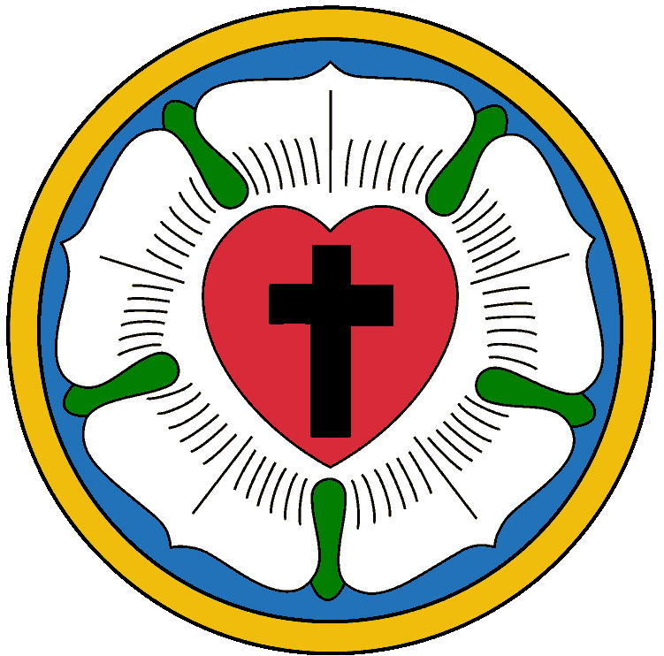

<!doctype html><html><head><meta charset="utf-8"><link rel="stylesheet" href="style.css">
<style>
  .tile { padding:0; }
  .ph { position:relative; overflow:hidden; background:#eee7d9; }
  .ph img { width:100%; height:100%; object-fit:cover; display:block; }
  .ph .placeholder { position:absolute; inset:0; }
  .facts { margin-top:28px; display:flex; flex-direction:column; gap:12px; font-size:29px; }
  .qr { width:150px; height:150px; background:#fff; padding:8px; border-radius:6px; }

  /* full — photo fills the tile, text sits on a dark gradient */
  .full .ph { position:absolute; inset:0; }
  .full .shade { position:absolute; inset:0; background:linear-gradient(to top, rgba(54,1,58,.92) 0%, rgba(54,1,58,.72) 34%, rgba(54,1,58,0) 62%); }
  .full .chip { position:absolute; top:64px; left:64px; display:flex; align-items:center; gap:14px; background:rgba(250,248,243,.92); border-radius:999px; padding:12px 28px 12px 14px; }
  .full .chip img { width:44px; height:44px; }
  .full .chip span { font-size:21px; font-weight:600; letter-spacing:.18em; text-transform:uppercase; color:var(--gold-deep); }
  .full .text { position:absolute; left:84px; right:84px; bottom:56px; color:#faf8f3; }
  .full h1.display { color:#faf8f3; }
  .full .accent { color:var(--gold-soft); }
  .full .lead { color:#efe6da; opacity:1; }
  .full .foot { border-top-color:rgba(217,196,145,.35); }
  .full .foot .site { color:var(--gold-soft); } .full .foot .handle { color:rgba(245,238,230,.75); }

  /* dark — aubergine accent tile with an inset photo */
  .dark .ph { margin:40px 84px 0; height:470px; border:3px solid var(--gold-soft); border-radius:4px; }
  .dark .body { flex:1; display:flex; flex-direction:column; padding:48px 84px 64px; }

  /* split — photo column beside the text */
  .split { flex-direction:row; }
  .split .ph { width:450px; height:100%; flex:0 0 450px; }
  .split.left .ph { border-right:5px solid var(--gold); }
  .split.right .ph { border-left:5px solid var(--gold); order:2; }
  .split .body { flex:1; display:flex; flex-direction:column; padding:80px 64px 64px; }
  .split .foot { flex-direction:column; align-items:flex-start; gap:6px; }

  /* frame — photo as a printed picture on parchment (recap feel) */
  .frame { background:var(--parchment-deep); }
  .frame .ph { margin:96px auto 0; width:880px; height:620px; border:22px solid #fffdf9; box-shadow:0 18px 40px rgba(44,34,48,.18); transform:rotate(-1.6deg); }
  .frame .body { flex:1; display:flex; flex-direction:column; padding:56px 84px 64px; }

  /* mid — kicker on top, photo band in the middle, quote below */
  .mid .top { padding:72px 84px 40px; }
  .mid .ph { width:100%; height:480px; border-top:4px solid var(--gold); border-bottom:4px solid var(--gold); }
  .mid .body { flex:1; display:flex; flex-direction:column; padding:44px 84px 64px; }

  /* person — round portrait, centred */
  .person .body { flex:1; display:flex; flex-direction:column; padding:84px; }
  .person .ph { width:440px; height:440px; border-radius:50%; border:5px solid var(--gold); margin:40px auto 0; }

  /* band — wide photo band on top */
  .band .ph { width:100%; height:600px; border-bottom:5px solid var(--gold); }
  .band .body { flex:1; display:flex; flex-direction:column; padding:52px 84px 64px; }
</style></head><body>
<!-- Photo feed posts with one shared frame (colours, type, rose, footer) and several layouts.
     Usage: foto-post.html?post=<n>. Photos go to templates/fotos/<F#>.jpg. -->
<div class="tile" id="tile"></div>
<script>
const POSTS = {
  1: { layout: "full", foto: "F1", hint: "F1 — Saal mit Menschen vor Beginn, von hinten",
       kicker: "Evangelisch · auf Deutsch · in Warschau",
       h: 'Schön, dass du <span class="accent">hier bist.</span>',
       t: "Die deutschsprachige evangelisch-lutherische Gemeinde in Warschau — ein offenes Haus für alle.",
       facts: ["🕘&ensp;Jeden 2. und 4. Sonntag, 09:30 Uhr", "📍&ensp;ul. Miodowa 21 (2. Stock)"] },
  3: { layout: "dark", foto: "F5", hint: "F5 — Hand hält Handy im Saal (Bildschirm nicht lesbar)",
       kicker: "Bleib dabei",
       h: 'Wann wir uns das nächste Mal <span class="accent">treffen?</span>',
       t: "Das erfährst du zuerst in unserer <strong style='color:var(--gold-soft)'>WhatsApp-Gruppe</strong> — Link im Profil.",
       qr: true },
  6: { layout: "split left", foto: "F6", hint: "F6 — Fassade Lutherisches Zentrum, Miodowa 21",
       kicker: "Wusstest du?",
       h: 'Deutsche Gottesdienste in Warschau — <span class="accent">seit den 1980ern.</span>',
       t: "2011 wurde unsere Gemeinde neu gegründet, seit 2015 sind wir ein eingetragener Verein — unter dem Dach der Evangelisch-Augsburgischen Kirche in Polen." },
  7: { layout: "frame", foto: "F2", hint: "F2 — Kaffeetisch mit Menschen im Gespräch",
       kicker: "Rückblick",
       h: 'Danke für diesen <span class="accent">Sonntag.</span>',
       t: "Vertraute Lieder, ein gutes Wort und danach lange Gespräche beim Kaffee. Schön, dass ihr da wart!" },
  8: { layout: "split right", foto: "F7", hint: "F7 — offene Bibel, ganz nah",
       kicker: "Zum Nachdenken",
       quote: "„Ein Christenmensch ist ein freier Herr über alle Dinge und niemand untertan.<br><br>Ein Christenmensch ist ein dienstbarer Knecht aller Dinge und jedermann untertan.“",
       cite: "Martin Luther, 1520" },
  2: { layout: "band", foto: "F11", hint: "F11 — Straßenszene ganz in der Nähe (Plac Zamkowy / Miodowa)",
       kicker: "Ankommen",
       h: 'Neu in Warschau? <span class="accent">Du bist nicht allein.</span>',
       t: "Bei uns triffst du Menschen, die deine Sprache sprechen — und die wissen, wie sich Ankommen anfühlt." },
  4: { layout: "person", foto: "F3", hint: "F3 — Porträt Pfarrer Bujok (hochkant)",
       kicker: "Wir stellen vor", name: "Adam Bujok", role: "Pfarrer",
       say: "„[Ein Satz aus seinem Interview — wörtlich, mit seinem Okay]“" },
  5: { layout: "mid", foto: "F9", hint: "F9 — Altar mit brennenden Kerzen",
       kicker: "Wort für die Woche",
       quote: "„Denn wo zwei oder drei versammelt sind in meinem Namen, da bin ich mitten unter ihnen.“",
       cite: "Matthäus 18,20" },
  9: { layout: "fullchip", foto: "F10", hint: "F10 — Dreifaltigkeitskirche am pl. Małachowskiego (optional)",
       kicker: "Evangelisch in Warschau" },
  10: { layout: "band", foto: "F8", hint: "F8 — Eingangstür auf der Rückseite mit Schild",
       kicker: "Gottesdienst auf Deutsch",
       h: 'Jeden 2. und 4. <span class="accent">Sonntag.</span>',
       facts: ["🕘&ensp;09:30 Uhr", "📍&ensp;ul. Miodowa 21, 2. Stock", "🚪&ensp;Eingang über die ul. Leona Schillera"] },
};

const p = POSTS[new URLSearchParams(location.search).get("post")];
const tile = document.getElementById("tile");

tile.className = `tile ${p.layout}${p.layout === "dark" ? " dark" : ""}`;

const head = `<div class="head"><span class="kicker">${p.kicker}</span></div>`;
const foot = `<div class="foot" style="padding-top:26px;"><span class="site">warschau-evangelisch.de</span><span class="handle">@warschau.evangelisch</span></div>`;
const hSize = p.layout.startsWith("split") ? 58 : 66;

function content() {
  if (p.layout === "person") {
    return `<div style="text-align:center;"><h1 class="display" style="font-size:72px; margin-top:44px;">${p.name}</h1>
      <p style="margin-top:14px; font-size:27px; letter-spacing:.14em; text-transform:uppercase; font-weight:600; color:var(--gold-deep);">${p.role}</p>
      <p class="lead" style="font-size:31px; font-style:italic; margin:34px auto 0; max-width:820px;">${p.say}</p></div>`;
  }
  if (p.quote) {
    return `<div style="flex:1; display:flex; align-items:center;"><figure style="border-right:5px solid var(--gold); padding-right:32px; text-align:right;">
      <blockquote style="font-family:'Fraunces'; font-size:38px; font-style:italic; font-weight:450; line-height:1.35; color:var(--aubergine);">${p.quote}</blockquote>
      <figcaption style="margin-top:22px; font-size:25px; color:var(--muted);">${p.cite}</figcaption></figure></div>`;
  }
  let html = `<h1 class="display" style="font-size:${hSize}px; margin-top:28px;">${p.h}</h1>`;
  if (p.t) html += `<p class="lead" style="font-size:29px; margin-top:22px;">${p.t}</p>`;
  if (p.facts) html += `<div class="facts">${p.facts.map((f) => `<p>${f}</p>`).join("")}</div>`;
  if (p.qr) html += `<div style="margin-top:30px; display:flex; align-items:center; gap:28px;"><p style="font-size:25px; line-height:1.45; color:rgba(245,238,230,.8); max-width:540px;">Am Rechner? Einfach mit der Handy-Kamera scannen.</p></div>`;
  return html;
}

const photo = `<div class="ph" id="ph"></div>`;
if (p.layout === "fullchip") {
  tile.className = "tile full";
  tile.innerHTML = `${photo}<div class="shade" style="background:linear-gradient(to top, rgba(54,1,58,.72) 0%, rgba(54,1,58,0) 22%);"></div>
    <div class="chip"><span>${p.kicker}</span></div>
    <div class="text" style="bottom:48px;"><div class="foot" style="border-top:none; padding-top:0;"><span class="site">warschau-evangelisch.de</span><span class="handle">@warschau.evangelisch</span></div></div>`;
} else if (p.layout === "mid") {
  tile.innerHTML = `<div class="top">${head}</div>${photo}<div class="body">${content()}<div style="margin-top:auto;">${foot}</div></div>`;
} else if (p.layout === "person") {
  tile.innerHTML = `<div class="body">${head}${photo}${content()}<div style="margin-top:auto;">${foot}</div></div>`;
} else if (p.layout === "full") {
  tile.innerHTML = `${photo}<div class="shade"></div>
    <div class="chip"><span>${p.kicker}</span></div>
    <div class="text">${content()}<div style="margin-top:40px;">${foot}</div></div>`;
} else {
  tile.innerHTML = `${photo}<div class="body">${head}${content()}<div style="margin-top:auto;">${foot}</div></div>`;
}

const ph = document.getElementById("ph");
const img = new Image();
img.onload = () => ph.appendChild(img);
img.onerror = () => { ph.innerHTML = `<div class="placeholder"><span class="hint">Foto ${p.hint}</span></div>`; };
img.src = `fotos/${p.foto}.jpg`;
</script>
</body></html>
